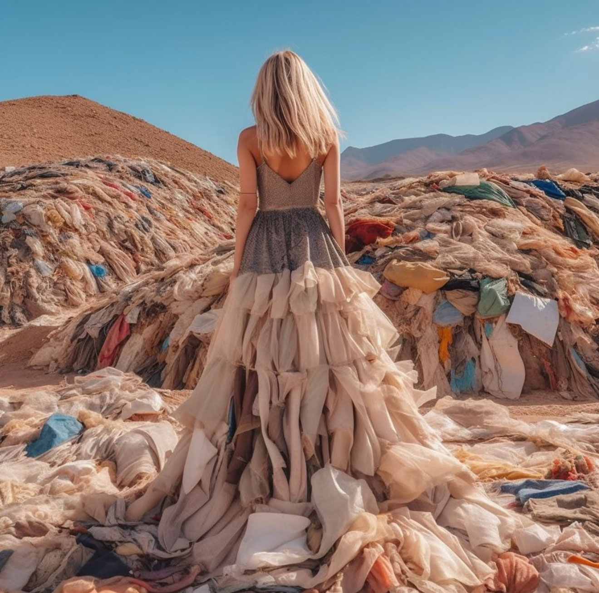
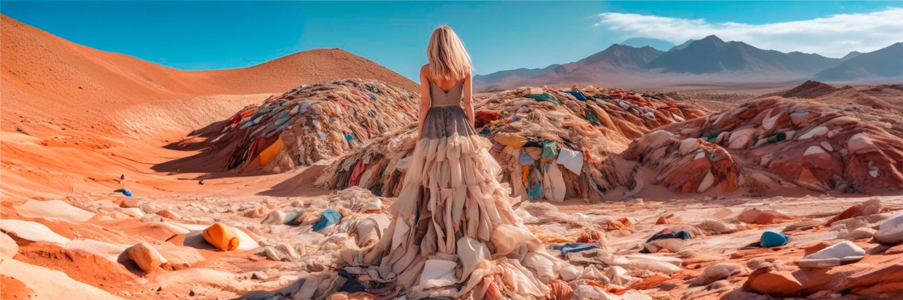

Descripción del proyecto
Esta imagen representa el impacto visual de la campaña de Greenpeace sobre el fast fashion en el Desierto de Atacama. El proceso comenzó con la expansión digital de la fotografía original de la modelo, manteniendo la escena coherente, sin perder la continuidad de la composición. La imagen fue ajustada con correcciones de color para resaltar los tonos terrosos del desierto y los textiles, Finalmente, la imagen fue optimizada y adaptada para el formato de carrusel de Instagram, en Illustrator.
Cliente
Greenpeace
Tiempo de desarrollo
1 semana
Si necesitas algo como esto, no dudes en contactarme.
ContáctameTécnologias utilizadas
Revisa este proyecto en


